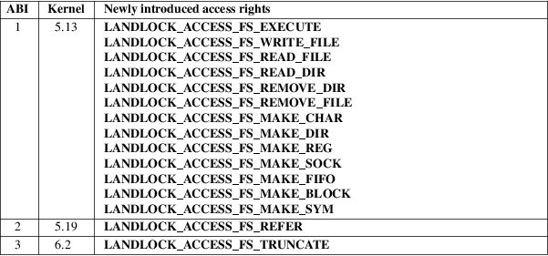

Landlock − unprivileged access-control
Landlock is an access-control system that enables any processes to securely restrict themselves and their future children. Because Landlock is a stackable Linux Security Module (LSM), it makes it possible to create safe security sandboxes as new security layers in addition to the existing system-wide access-controls. This kind of sandbox is expected to help mitigate the security impact of bugs, and unexpected or malicious behaviors in applications.
A Landlock security policy is a set of access rights (e.g., open a file in read-only, make a directory, etc.) tied to a file hierarchy. Such policy can be configured and enforced by processes for themselves using three system calls:
|
• |
landlock_create_ruleset(2) creates a new ruleset; | ||
|
• |
landlock_add_rule(2) adds a new rule to a ruleset; | ||
|
• |
landlock_restrict_self(2) enforces a ruleset on the calling thread. |
To be able to use these system calls, the running kernel must support Landlock and it must be enabled at boot time.
Landlock
rules
A Landlock rule describes an action on an object. An object
is currently a file hierarchy, and the related filesystem
actions are defined with access rights (see
landlock_add_rule(2)). A set of rules is aggregated
in a ruleset, which can then restrict the thread enforcing
it, and its future children.
Filesystem
actions
These flags enable to restrict a sandboxed process to a set
of actions on files and directories. Files or directories
opened before the sandboxing are not subject to these
restrictions. See landlock_add_rule(2) and
landlock_create_ruleset(2) for more context.
A file can only
receive these access rights:
LANDLOCK_ACCESS_FS_EXECUTE
Execute a file.
LANDLOCK_ACCESS_FS_WRITE_FILE
Open a file with write access.
When opening files for writing, you will often additionally need the LANDLOCK_ACCESS_FS_TRUNCATE right. In many cases, these system calls truncate existing files when overwriting them (e.g., creat(2)).
LANDLOCK_ACCESS_FS_READ_FILE
Open a file with read access.
LANDLOCK_ACCESS_FS_TRUNCATE
Truncate a file with truncate(2), ftruncate(2), creat(2), or open(2) with O_TRUNC. Whether an opened file can be truncated with ftruncate(2) is determined during open(2), in the same way as read and write permissions are checked during open(2) using LANDLOCK_ACCESS_FS_READ_FILE and LANDLOCK_ACCESS_FS_WRITE_FILE. This access right is available since the third version of the Landlock ABI.
A directory can
receive access rights related to files or directories. The
following access right is applied to the directory itself,
and the directories beneath it:
LANDLOCK_ACCESS_FS_READ_DIR
Open a directory or list its content.
However, the
following access rights only apply to the content of a
directory, not the directory itself:
LANDLOCK_ACCESS_FS_REMOVE_DIR
Remove an empty directory or rename one.
LANDLOCK_ACCESS_FS_REMOVE_FILE
Unlink (or rename) a file.
LANDLOCK_ACCESS_FS_MAKE_CHAR
Create (or rename or link) a character device.
LANDLOCK_ACCESS_FS_MAKE_DIR
Create (or rename) a directory.
LANDLOCK_ACCESS_FS_MAKE_REG
Create (or rename or link) a regular file.
LANDLOCK_ACCESS_FS_MAKE_SOCK
Create (or rename or link) a UNIX domain socket.
LANDLOCK_ACCESS_FS_MAKE_FIFO
Create (or rename or link) a named pipe.
LANDLOCK_ACCESS_FS_MAKE_BLOCK
Create (or rename or link) a block device.
LANDLOCK_ACCESS_FS_MAKE_SYM
Create (or rename or link) a symbolic link.
LANDLOCK_ACCESS_FS_REFER
Link or rename a file from or to a different directory (i.e., reparent a file hierarchy).
This access right is available since the second version of the Landlock ABI.
This is the only access right which is denied by default by any ruleset, even if the right is not specified as handled at ruleset creation time. The only way to make a ruleset grant this right is to explicitly allow it for a specific directory by adding a matching rule to the ruleset.
In particular, when using the first Landlock ABI version, Landlock will always deny attempts to reparent files between different directories.
In addition to the source and destination directories having the LANDLOCK_ACCESS_FS_REFER access right, the attempted link or rename operation must meet the following constraints:
|
• |
The reparented file may not gain more access rights in the destination directory than it previously had in the source directory. If this is attempted, the operation results in an EXDEV error. | ||
|
• |
When linking or renaming, the LANDLOCK_ACCESS_FS_MAKE_* right for the respective file type must be granted for the destination directory. Otherwise, the operation results in an EACCES error. | ||
|
• |
When renaming, the LANDLOCK_ACCESS_FS_REMOVE_* right for the respective file type must be granted for the source directory. Otherwise, the operation results in an EACCES error. |
If multiple requirements are not met, the EACCES error code takes precedence over EXDEV.
Layers of
file path access rights
Each time a thread enforces a ruleset on itself, it updates
its Landlock domain with a new layer of policy. Indeed, this
complementary policy is composed with the potentially other
rulesets already restricting this thread. A sandboxed thread
can then safely add more constraints to itself with a new
enforced ruleset.
One policy layer grants access to a file path if at least one of its rules encountered on the path grants the access. A sandboxed thread can only access a file path if all its enforced policy layers grant the access as well as all the other system access controls (e.g., filesystem DAC, other LSM policies, etc.).
Bind mounts
and OverlayFS
Landlock enables restricting access to file hierarchies,
which means that these access rights can be propagated with
bind mounts (cf. mount_namespaces(7)) but not with
OverlayFS.
A bind mount mirrors a source file hierarchy to a destination. The destination hierarchy is then composed of the exact same files, on which Landlock rules can be tied, either via the source or the destination path. These rules restrict access when they are encountered on a path, which means that they can restrict access to multiple file hierarchies at the same time, whether these hierarchies are the result of bind mounts or not.
An OverlayFS mount point consists of upper and lower layers. These layers are combined in a merge directory, result of the mount point. This merge hierarchy may include files from the upper and lower layers, but modifications performed on the merge hierarchy only reflect on the upper layer. From a Landlock policy point of view, each of the OverlayFS layers and merge hierarchies is standalone and contains its own set of files and directories, which is different from a bind mount. A policy restricting an OverlayFS layer will not restrict the resulted merged hierarchy, and vice versa. Landlock users should then only think about file hierarchies they want to allow access to, regardless of the underlying filesystem.
Inheritance
Every new thread resulting from a clone(2) inherits
Landlock domain restrictions from its parent. This is
similar to the seccomp(2) inheritance or any other
LSM dealing with tasks’ credentials(7). For
instance, one process’s thread may apply Landlock
rules to itself, but they will not be automatically applied
to other sibling threads (unlike POSIX thread credential
changes, cf. nptl(7)).
When a thread sandboxes itself, we have the guarantee that the related security policy will stay enforced on all this thread’s descendants. This allows creating standalone and modular security policies per application, which will automatically be composed between themselves according to their runtime parent policies.
Ptrace
restrictions
A sandboxed process has less privileges than a non-sandboxed
process and must then be subject to additional restrictions
when manipulating another process. To be allowed to use
ptrace(2) and related syscalls on a target process, a
sandboxed process should have a subset of the target process
rules, which means the tracee must be in a sub-domain of the
tracer.
Truncating
files
The operations covered by
LANDLOCK_ACCESS_FS_WRITE_FILE and
LANDLOCK_ACCESS_FS_TRUNCATE both change the contents
of a file and sometimes overlap in non-intuitive ways. It is
recommended to always specify both of these together.
A particularly surprising example is creat(2). The name suggests that this system call requires the rights to create and write files. However, it also requires the truncate right if an existing file under the same name is already present.
It should also be noted that truncating files does not require the LANDLOCK_ACCESS_FS_WRITE_FILE right. Apart from the truncate(2) system call, this can also be done through open(2) with the flags O_RDONLY | O_TRUNC.
When opening a file, the availability of the LANDLOCK_ACCESS_FS_TRUNCATE right is associated with the newly created file descriptor and will be used for subsequent truncation attempts using ftruncate(2). The behavior is similar to opening a file for reading or writing, where permissions are checked during open(2), but not during the subsequent read(2) and write(2) calls.
As a consequence, it is possible to have multiple open file descriptors for the same file, where one grants the right to truncate the file and the other does not. It is also possible to pass such file descriptors between processes, keeping their Landlock properties, even when these processes do not have an enforced Landlock ruleset.
Landlock was introduced in Linux 5.13.
To determine which Landlock features are available, users should query the Landlock ABI version:

Users should use the Landlock ABI version rather than the kernel version to determine which features are available. The mainline kernel versions listed here are only included for orientation. Kernels from other sources may contain backported features, and their version numbers may not match.
To query the running kernel’s Landlock ABI version, programs may pass the LANDLOCK_CREATE_RULESET_VERSION flag to landlock_create_ruleset(2).
When building fallback mechanisms for compatibility with older kernels, users are advised to consider the special semantics of the LANDLOCK_ACCESS_FS_REFER access right: In ABI v1, linking and moving of files between different directories is always forbidden, so programs relying on such operations are only compatible with Landlock ABI v2 and higher.
Landlock is enabled by CONFIG_SECURITY_LANDLOCK. The lsm=lsm1,...,lsmN command line parameter controls the sequence of the initialization of Linux Security Modules. It must contain the string landlock to enable Landlock. If the command line parameter is not specified, the initialization falls back to the value of the deprecated security= command line parameter and further to the value of CONFIG_LSM. We can check that Landlock is enabled by looking for landlock: Up and running. in kernel logs.
It is currently not possible to restrict some file-related actions accessible through these system call families: chdir(2), stat(2), flock(2), chmod(2), chown(2), setxattr(2), utime(2), ioctl(2), fcntl(2), access(2). Future Landlock evolutions will enable to restrict them.
We first need to create the ruleset that will contain our rules. For this example, the ruleset will contain rules that only allow read actions, but write actions will be denied. The ruleset then needs to handle both of these kinds of actions. See below for the description of filesystem actions.
struct
landlock_ruleset_attr attr = {0};
int ruleset_fd;
attr.handled_access_fs
=
LANDLOCK_ACCESS_FS_EXECUTE |
LANDLOCK_ACCESS_FS_WRITE_FILE |
LANDLOCK_ACCESS_FS_READ_FILE |
LANDLOCK_ACCESS_FS_READ_DIR |
LANDLOCK_ACCESS_FS_REMOVE_DIR |
LANDLOCK_ACCESS_FS_REMOVE_FILE |
LANDLOCK_ACCESS_FS_MAKE_CHAR |
LANDLOCK_ACCESS_FS_MAKE_DIR |
LANDLOCK_ACCESS_FS_MAKE_REG |
LANDLOCK_ACCESS_FS_MAKE_SOCK |
LANDLOCK_ACCESS_FS_MAKE_FIFO |
LANDLOCK_ACCESS_FS_MAKE_BLOCK |
LANDLOCK_ACCESS_FS_MAKE_SYM |
LANDLOCK_ACCESS_FS_REFER |
LANDLOCK_ACCESS_FS_TRUNCATE;
ruleset_fd =
landlock_create_ruleset(&attr, sizeof(attr), 0);
if (ruleset_fd == −1) {
perror("Failed to create a ruleset");
exit(EXIT_FAILURE);
}
We can now add a new rule to this ruleset thanks to the returned file descriptor referring to this ruleset. The rule will only allow reading the file hierarchy /usr. Without another rule, write actions would then be denied by the ruleset. To add /usr to the ruleset, we open it with the O_PATH flag and fill the struct landlock_path_beneath_attr with this file descriptor.
struct
landlock_path_beneath_attr path_beneath = {0};
int err;
path_beneath.allowed_access
=
LANDLOCK_ACCESS_FS_EXECUTE |
LANDLOCK_ACCESS_FS_READ_FILE |
LANDLOCK_ACCESS_FS_READ_DIR;
path_beneath.parent_fd
= open("/usr", O_PATH | O_CLOEXEC);
if (path_beneath.parent_fd == −1) {
perror("Failed to open file");
close(ruleset_fd);
exit(EXIT_FAILURE);
}
err = landlock_add_rule(ruleset_fd,
LANDLOCK_RULE_PATH_BENEATH,
&path_beneath, 0);
close(path_beneath.parent_fd);
if (err) {
perror("Failed to update ruleset");
close(ruleset_fd);
exit(EXIT_FAILURE);
}
We now have a ruleset with one rule allowing read access to /usr while denying all other handled accesses for the filesystem. The next step is to restrict the current thread from gaining more privileges (e.g., thanks to a set-user-ID binary).
if
(prctl(PR_SET_NO_NEW_PRIVS, 1, 0, 0, 0)) {
perror("Failed to restrict privileges");
close(ruleset_fd);
exit(EXIT_FAILURE);
}
The current thread is now ready to sandbox itself with the ruleset.
if
(landlock_restrict_self(ruleset_fd, 0)) {
perror("Failed to enforce ruleset");
close(ruleset_fd);
exit(EXIT_FAILURE);
}
close(ruleset_fd);
If the landlock_restrict_self(2) system call succeeds, the current thread is now restricted and this policy will be enforced on all its subsequently created children as well. Once a thread is landlocked, there is no way to remove its security policy; only adding more restrictions is allowed. These threads are now in a new Landlock domain, merge of their parent one (if any) with the new ruleset.
Full working code can be found in https://git.kernel.org/pub/scm/linux/kernel/git/stable/linux.git/tree/samples/landlock/sandboxer.c
landlock_create_ruleset(2),
landlock_add_rule(2),
landlock_restrict_self(2)
https://landlock.io/